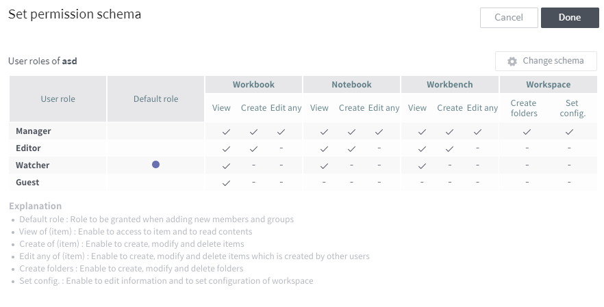

Shared workspace¶
A shared workspace is designed for access and use by multiple users. The following subsections describe how to view and create shared workspaces, and explain “permission schema,” which sets which users or groups are allowed to access shared workspaces.
Create a shared workspace¶
A new shared workspace is created as follows:
Click the
button on the shared workspace list page to move the page to create a new shared workspace.
Enter a Name and Description, and then set up the Permission schema by referring to the descriptions below:

Use a preset schema: Load the permission schema defined by the administrator.
Use a custom schema: Define a new permission schema. (See Set access permissions for a shared workspace for how to define a new permission schema.)
Click Done to finish creating a workspace.
Set access permissions for a shared workspace¶
Setting the access permission for a shared workspace is conducted in the following two steps:
Set an access permission for each user role (See Set permission schema)
Grant a role to each user or user group (See Set shared members & groups)
Set permission schema¶
View permission schema¶
Click the icon at the top-right of the shared workspace home and click Set permission schema to view the defined permission schema as follows:

In the above example, Manager, Editor, Watcher, and Guest are defined as user roles. As shown in this example, a permission schema is a set of user roles defining different access permissions.
What each column determines is as follows:
Default role
When a new user or user group is added, it is assigned the default role.
Permission for each entity type (workbook/notebook/workbench)
View: Allows to access and view data in entities of the type.
Create: Allows to create, edit, and delete entities of the type.
Edit any: Allows to edit or delete entities of the type created by another user.
Workspace permission
Create folders: Allows to create, edit, and delete folders in the workspace.
Set config.: Allows to modify the name and description of the workspace and to change the workspace permission schema.
Change permission schema¶
Click the Change schema button on the permission schema view page to move to a page to change the defined permission schema as follows:

Click Select Role Set combo box on the right to display the permission schema defined by the administrator. Custom schema at the bottom of the list allows you to set new user roles. Select one to display the following section. (If you select Custom schema, you must first define a permission for each user role. Click the button at the right of New schema to move to the permission setting page, and set a permission for each user role by referring to View permission schema)

Here, each user role of the current permission schema is substituted with the user role defined in the new permission schema. Hover the mouse over the icon next to the name of a user role to display the permission assigned to the user role. Click Done to finish setting the permission schema.
Set shared members & groups¶
Click the icon at the top-right of the shared workspace home, and click Set shared member & group to move to a page to set members and groups for the shared workspace as follows: On this page, each user or user group is assigned a user role defined in the permission schema. Assign user roles by referring to the following explanation, and click Done to finish setting workspace access permissions.

Select whether to assign user roles individually or in groups
Member tab: Assign user roles to individual users.
Group tab: Assign user roles in groups. (A user group can be established by administrator permission.)
User roles: Click on it to pop up a dialog box showing the permission schema, which defines a permission for each user role.
Member/group list: Lists the users (groups in the case of the group tab) registered in Discovery. Click a user (group) in the list to add it to the role assignment section on the right. Click an added user (group) to remove it from the section on the right.
Assign a user role: Click this combo box to display user roles defined in the active permission schema. Select the role you want to assign to the user (group).